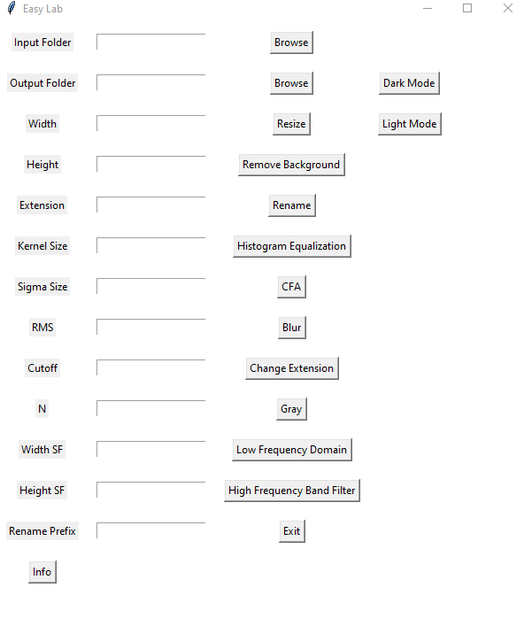

EasyLab
Offers simple solutions with GUI. From a folder, it can resize images, change their extensions, applies spatial frequencies, and remove backgrounds...
Purpose of the project
- The purpose of the project is to offer simple solutions to solve some of the problems that arise when working with big image datasets.
- The project is a work in progress, and it is not finished yet. Since it offers GUI, it is very practical to use it.
Features
- Resize images
- Change extension
- Apply spatial frequencies (low pass, high pass with Butterworth filter)
- Apply Gaussian blur
- Apply grayscale filter (RGB to Gray)
- Rename images (with a desired prefix)
- Remove background from images (Utilizes deep learning, so it is slow depending on the size of the images)
- Apply Histogram Equalization
- Apply CFA (Color Filter Array) filter
installation
- Install easylab with pip:
pip install easylab
Usage
it is very simple to use the project.
For the open GUI, use the following command:
from easylab import easylab
then open the gui with:
easylab.easylabgui()
This basically starts the GUI. First, select the input folder then select the output folder. Then just select the options you want to apply to the images. Rename images will change all image names from the input folder with the input prefix. Don't forget to add an extension if you use rename option.
Javascript
I will also add some javascript to the online version. You can find js demos on the easylab website here
E-prime scripts
get the trail list (Image names for the E-Prime) or create a jitter: https://altunenes.github.io/EasyLab/filenames
Contributing
Contributions are welcome!
- Enes Altun Main Author
Current look
